Brenfyndessa es un campamento educativo que busca reducir el rezago educativo en estudiantes de escuelas de nivel básico como primaria y secundaria otorgando talleres durante todo el año dónde los alumnos podrán asistir para regularización, aprender y desarrollar nuevos conocimientos y habilidades a un costado económico durante la semana doble no solo conocerá materias básicas del programa escolar si no también oficios como repostería,deportes, artes y salud que les ayudará en su vida diaria frente a cualquier situación que se puedan encontrar esperando tener éxito durante el desarrollo de este emprendimiento, buscamos y lo los alumnos inscritos no solo aprendan más sobre la escuela y temas que les ofrecen sus profesores si no a conocer más allá mediante la práctica y la experiencia que les ofrecen, creando un ambiente dentro de aulas creativas y llamativas dónde los alumnos puedan socializar libremente y expresarse mejor con sus compañeros y puedan desarrollar habilidades de socialización conocimientos emocional , expresión corporal, expresión oral y desarrollo de un vocabulario y lenguaje más amplio y crear conocimientos de emprendimiento para sostener gastos económicos propios , somos un campamento educativo que busca enseñar fuera de las normas tradicionales de dictado y escritura donde fomentamos la creatividad y la diversión para crear nuevos conocimientos utilizando los intereses de nuestros estudiantes para favorece su atención y participación de forma constante, garantizando resultados y un servicio educativo de calidad cómo muchos de nuestros clientes lo buscan.
Proyecto de Emprendimiento
Camp Éducatif Brenfyndessa
Formando líderes en la naturaleza
La educación de excelencia inspirada de la experiencia
Documento digital
Esta página convierte el proyecto completo en un sitio web escolar, organizado por secciones y listo para presentarse en GitHub Pages.
Galería del proyecto
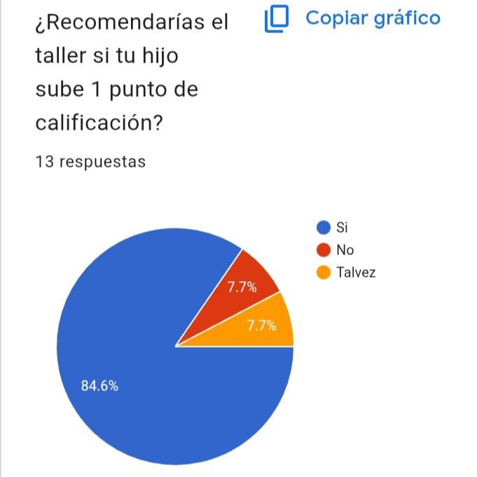
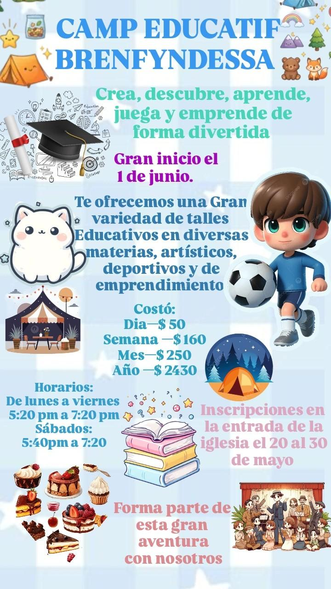
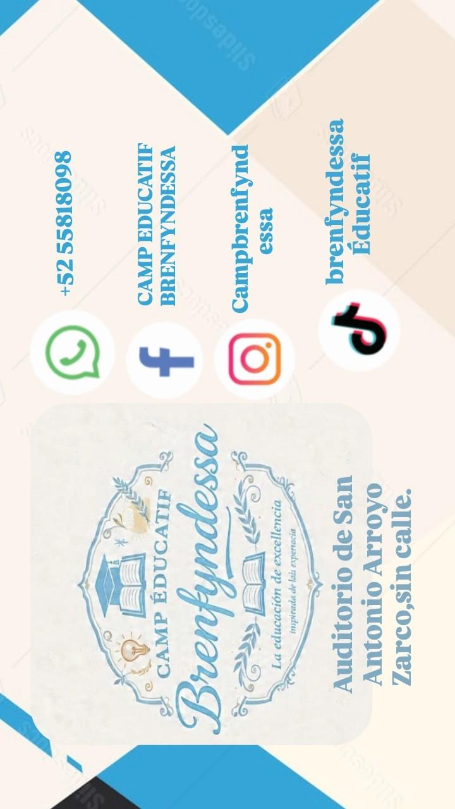
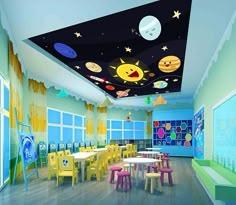
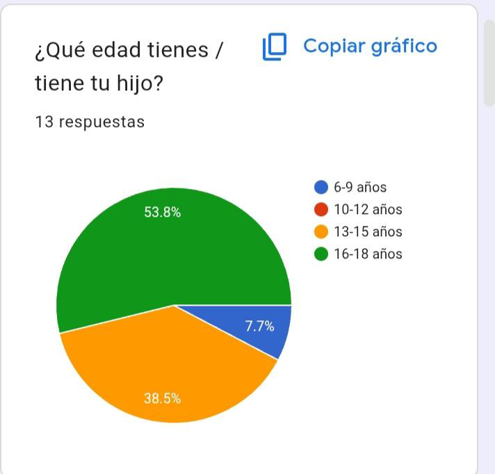
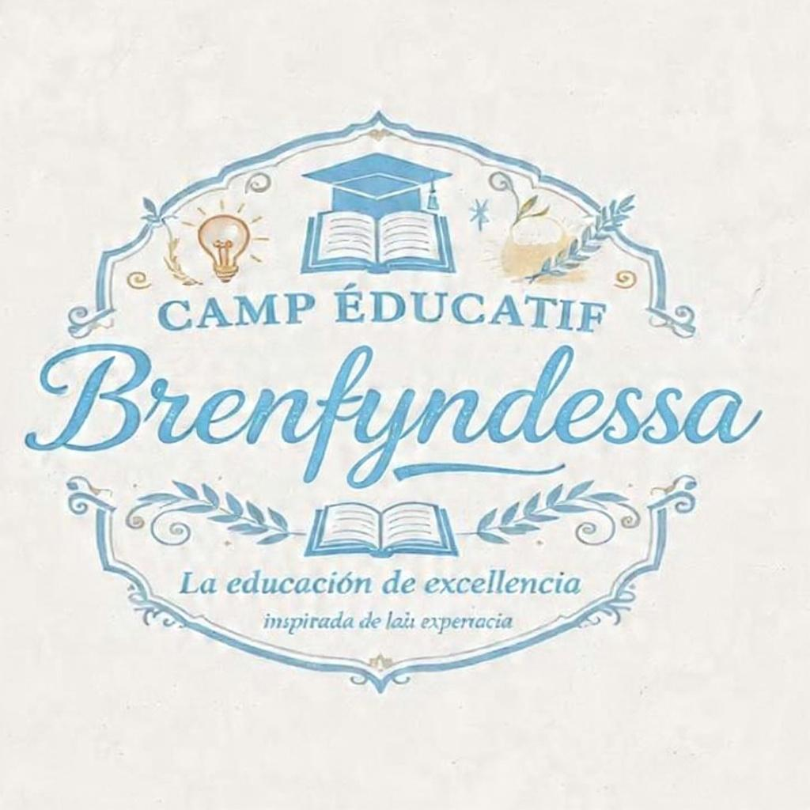
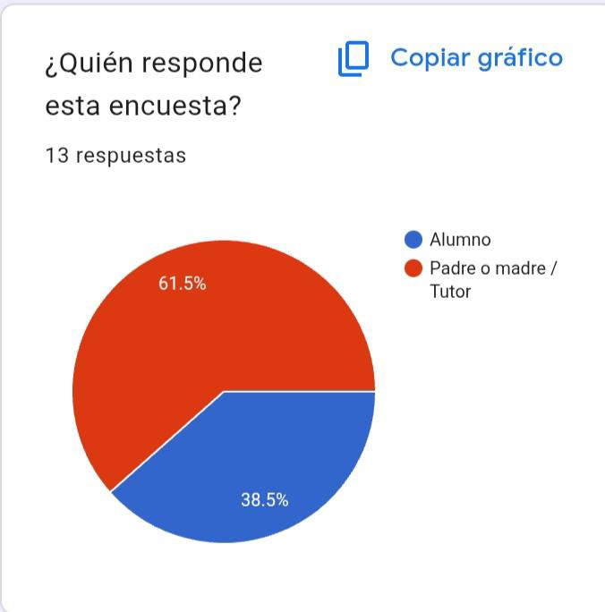
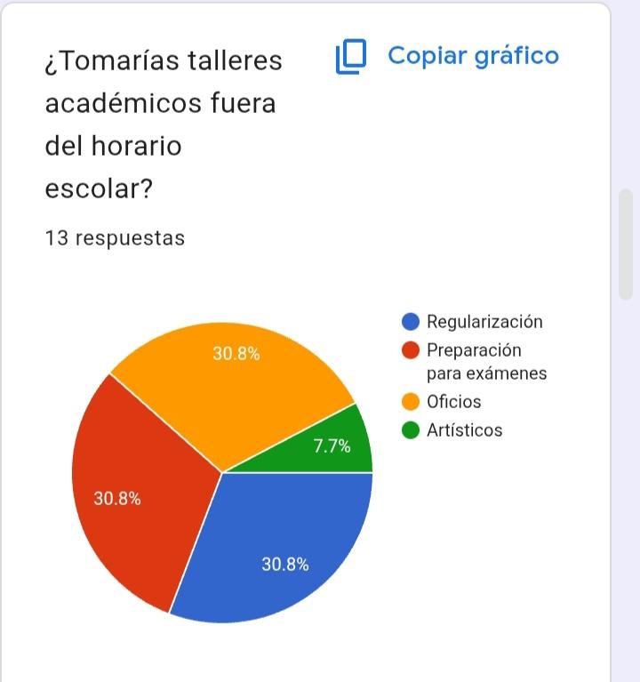
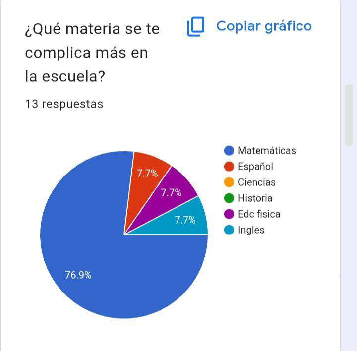
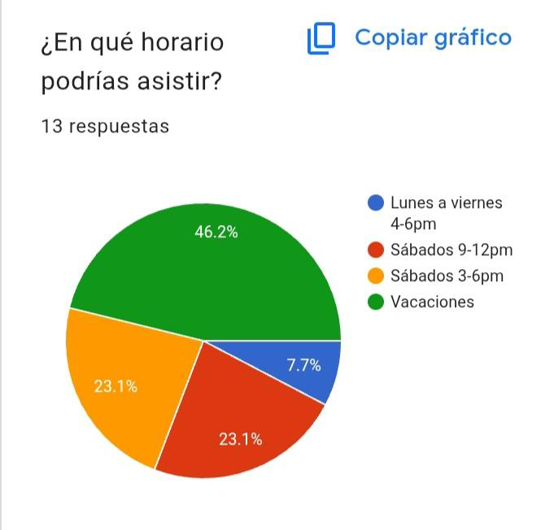
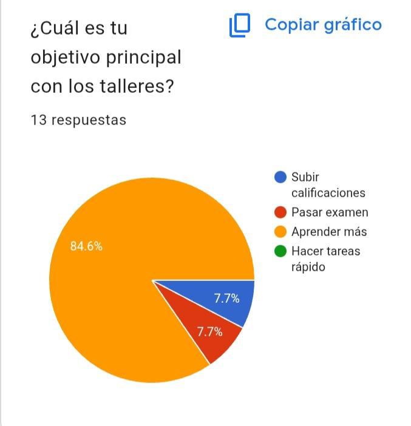
Introducción
Nombre De La Empresa
Brenfyndessa
La educación de excelencia inspirada de la experiencia
Logotipo Y Slogan
Misión
Somos una microempresa de forma moral que nace con el propósito de prevenir y solucionar el rezago educativo en los alumnos, dando cómo solución clases en taller anuales para mejorar el conocimiento de los alumnos y ayudarlos a aprender y emprender nuevos proyectos en su vida desarrollando habilidades de competencia .
Visión
Queremos llegar a ser el campamento más recibido en el municipio por nuestros excelentes métodos educativos al cual los alumnos con rezago y problemas educativos puedan acudir para obtener el conocimiento que necesitan y en el desarrollo de sus habilidades competentes.
Objetivo General
General: Reducir el rezago educativo en vacaciones y prevenir el estrés escolar en los alumnos y familias de la zona de Arroyo Zarco.
Objetivo Específico
Específicos: Reforzar materias escolares, enseñar oficios básicos, crear espacios seguros para los niños escritos en el campamento.
Objetivo Personal
Personal: Tener empleo en tu comunidad sin salir a Aculco a diario.
Política De La EmpresaVer contenido
1. POLÍTICA : ESTRUCTURA, SEGURIDAD Y CUMPLIMIENTO
1.1 Política de Seguridad Integral:
La vida está por encima de la experiencia. Toda actividad se diseña con análisis de riesgo, doble verificación y plan B documentado. Nadie sube a la tirolesa sin doble anclaje. Nadie entra a la alberca sin salvavidas certificado. Primero proteges, luego inspiras.
1.2 Política de Legalidad y Transparencia:
Brenfyndessa opera con 100% de permisos vigentes: uso de suelo, licencia, COFEPRIS, IMSS, seguro RC y registro IMPI. Toda cuota emite CFDI. No hay pagos en efectivo sin recibo. Los papás tienen derecho a ver la carpeta con todos los documentos.
1.3 Política de Protección Infantil :
Interés superior del niño Art.4° Constitucional. Cero tolerancia a violencia física, verbal o simbólica. Regla de 2 adultos: ningún guía está solo con 1 menor en espacio cerrado. Todo el personal pasa filtro de antecedentes y firma Código de Conducta.
1.4 Política de Contratación y Trabajo Digno:
Todo colaborador tiene contrato, IMSS, pago puntual y capacitación. No existen “voluntarios” que sustituyan trabajo subordinado. Promovemos equidad: 50% de puestos de liderazgo para mujeres. Descanso mínimo de 8 horas entre jornadas.
2. POLÍTICA: EXPERIENCIA EDUCATIVA Y TERRITORIO
2.1 Política Pedagógica:
Educar es encender, no llenar. Toda actividad debe tener objetivo, vivencia y cierre. Prohibido el castigo, la burla y la comparación. El error es parte del aprendizaje. El “no puedo” se acompaña, no se forza.
2.2 Política Ambiental:
El territorio no es escenario, es maestro. Aplicamos “No deje rastro”. Pedimos permiso a la tierra antes de intervenir. Separamos residuos, usamos biodegradables y 1 actividad por camp es de servicio ecológico. Bello por fuera, responsable por dentro.
2.3 Política de Alimentación Consciente:
La comida que nutre. Menú balanceado, casero, sin ultraprocesados. Atendemos alergias con protocolo médico. La hora de la comida es ritual: sin pantallas, con gratitud. El agua simple es ilimitada y gratuita.
2.4 Política de Comunicación Auténtica:
No publicamos fotos de menores sin autorización firmada de ambos padres. No usamos miedo en la publicidad: no vendemos “para que no esté en el celular”. Mostramos lo real: lodo, risas y proceso. Prohibido alterar fotos para “verse mejor”.
3. POLÍTICA ESSA: VÍNCULO, INCLUSIÓN Y CORAZÓN
3.1 Política de Inclusión y No Discriminación:
Brenfyndessa es para todos los niños, sin distinción de género, capacidad, religión, origen o estructura familiar. Hacemos ajustes razonables: dieta, accesibilidad, tiempo fuera sensorial. Capacitamos al staff en neuro divergencia y primeros auxilios emocionales.
3.2 Política de Manejo de Conflictos:
El conflicto es una oportunidad de vínculo. Usamos escucha, reparación y acuerdo. Entre niños: círculo de palabra guiado. Entre adultos: mediación con terceros. Cero gritos del staff hacia menores. Si un guía pierde la templanza, se retira y se repara.
3.3 Política de Privacidad y Datos:
Cumplimos Ley Federal de Protección de Datos. La información médica, psicológica y familiar es confidencial. Solo el coordinador y personal médico autorizado la manejan. Se destruye 1 año después del camp, salvo autorización.
3.4 Política de Trato con Familias:
Los papás son aliados, no clientes. Tienen derecho a informe diario, a conocer al staff y a visitarnos con cita. Nos comprometemos a responder dudas en menos de 24h. Hospitalidad: toda familia es recibida con agua, sombra y nombre.
4. POLÍTICA: NEXO, LEGADO Y MEJORA CONTINUA
4.1 Política de Trascendencia y Seguimiento :
No acaba el camp cuando se van. Damos bitácora a cada niño y guía de continuidad a papás. A los 3 meses mandamos recordatorio del “reto síntesis”. Los ex alumnos tienen programa de mentoría.
4.2 Política de Mejora:
Y evalúa para evolucionar. Cada camp cierra con 3 evaluaciones: niños, papás y staff. Medimos 5 indicadores: Seguridad, Aprendizaje, Alegría, Pertenencia y NPS. Lo que no es honró se corrige antes del siguiente camp.
4.3 Política de Alianzas con Raíz:
Solo trabajamos con proveedores que comparten valores: pago justo, sin explotación, materiales durables. No aceptamos patrocinios de comida chatarra, alcohol o apuestas. Innovamos sin perder el alma.
4.4 Política de Crisis y Vocería’
Ante incidentes, activa el protocolo: 1. Atender, 2. Contener, 3. Informar a familia en los primeros 30 min, 4. Reportar a la autoridad si aplica. Una sola vocera: dirección. No especulamos. La verdad con ternura es política.
ValoresVer contenido
Integridad: Coherencia entre lo que decimos y hacemos es la base que no se ve pero sostiene todo. Se vive cuando el guía cumple el protocolo aunque nadie lo vea y los permisos están en regla.
Seguridad: Primacía de la vida sobre la experiencia protege antes de inspirar. Se vive cuando revisamos arneses dos veces y el botiquín está completo.
Disciplina: Orden que libera. La estructura da libertad para crear. Se vive cuando los horarios se cumplen, los roles están claros y el equipo llega antes.
Responsabilidad: Responder por cada niño como si fuera propio. Art. 4° Constitucional aplicado. Se vive cuando reportamos incidentes y tenemos seguro vigente.
Autenticidad: La piel no miente. Vivimos lo que enseñamos. Se vive cuando el tallerista duerme en casa de campaña, no en hotel.
Respeto: A la tierra, al cuerpo, al ritmo de cada niño. Se vive cuando pedimos permiso al árbol antes de colgar la cuerda y no forzamos al que tiene miedo.
Curiosidad: El motor del aprendizaje. Preguntar es más importante que responder. Se vive cuando dejamos tiempo libre para explorar y él “no sé” está permitido.
Excelencia: Dar lo mejor, no lo perfecto. Se vive cuando la bitácora está bien diseñada y la comida es casera y nutritiva.
Empatía: Sentir con el otro para guiar sin imponer. Se vive cuando consolamos sin minimizar y adaptamos el reto al niño.
Gratitud: Reconocer que la tierra, los papás y el equipo hacen posible el camp. Se vive en el círculo de palabra al final y en la carta a la comunidad.
Alegría: El aprendizaje entra por el juego. Se vive cuando cantamos aunque llueva y celebramos el lodo.
Pertenencia: “Soy Brenfyndessa” no es playera, es identidad. Se vive cuando el niño defiende a su equipo y los exalumnos regresan como guías.
Trascendencia: No hacemos campamentos, formamos recuerdos que cambian vidas. Se vive cuando un papá dice: “Mi hijo se volvió diferente” y cuando un niño a los 20 años recuerda tu nombre.
Constancia: No es un día, es todos los días. El camp se sostiene con pasos pequeños y firmes. Se vive cuando el equipo llega puntual el Día 1 y también el Día 3 bajo lluvia.
Prevención: Anticipar es amar. Se vive cuando revisamos el clima, la ruta y el plan B antes de salir al sendero.
Justicia: Cada niño tiene lo que necesita, no lo mismo. Se vive cuando damos más apoyo al que tiene vértigo sin exhibirlo.
Sobriedad: La fuerza no grita. Se vive en instalaciones limpias, sin excesos, con materiales nobles.
Valentía: La piel tiembla y actúa. No es ausencia de miedo, es corazón con paso al frente. Se vive cuando el niño cruza el puente aunque le suden las manos.
Contemplación: Brenfyndessa también es observar. El territorio habla si lo escuchas. Se vive en 2 minutos de vista al amanecer sin hablar.
Adaptabilidad: El plan sirve a la experiencia, no al revés. El bosque manda. Se vive cuando cambiamos la actividad por lluvia y sale mejor.
Juego Limpio: Competir es crecer juntos, no aplastar. Se vive cuando el equipo ganador ayuda al último a levantar su casa de campaña.
Ternura: brenfyndessa es la fuerza que cuida y abraza sin preguntar. Se vive cuando secamos lágrimas de nostalgia sin apurarse.
Escucha: El corazón tiene oídos. Antes de guiar, atendemos. Se vive cuando un guía se agacha para quedar a la altura del niño.
Celebración: Todo logro merece aplauso. La alegría compartida se multiplica. Se vive en el círculo con porras específicas, no genéricas.
Hospitalidad: Recibir como en casa. Todo el que llega es importante. Se vive cuando damos agua y sombra al papá que vino por su hijo.
Legado: Y no acaba en nosotros. Lo que sembramos lo cosecha otro. Se vive cuando un ex alumno trae a su hermanito 5 años después.
Unidad: No son departamentos, somos uno. Se vive cuando cocina, guías y directivos cargan las hieleras juntos.
Reverencia: Ante la vida, la tierra y la infancia. Y nos recuerda que esto es sagrado. Se vive en 1 minuto de silencio antes del primer sendero.
Innovación con Raíz: Y mira adelante sin olvidar el origen. Mejoramos el camp cada año, pero sin perder el alma. Se vive cuando probamos una dinámica nueva y medimos su honra.
Templanza: No reacciona, responde. Es fuerza serena bajo presión. Se vive cuando hay tormenta, se cancela la tirolesa y el guía mantiene la calma y propone plan B con sonrisa.
Asombro: Brenfyndessa mantiene los ojos de niño. La rutina no mata la magia. Se vive cuando encontramos una luciérnaga y todo el grupo se calla 10 segundos. Es diciendo “guarda” y todos miran.
Síntesis: Convierte el caos en sentido. Une lo que aprendimos, lo que sentimos y lo que haremos. Se vive en el último círculo: cada niño dice 1 palabra que se lleva. No es resumen, es esencial. Es Brenydessa cantando todo lo vivido en una nota.
Acta ConstitutivaVer contenido
FORMATO DE ACTA CONSTITUTIVA DE SOCIEDAD ANONIMA DE CAPITAL VARIABLE
DE ESCRITURA 3100, VOLUMEN 10, FOJAS 3800. EN LA CIUDAD DE ACULCO ESTADO DE MÉXICO, EN FECHA 13 DE MAYO DEL 2025, YO, EL DOC. HÉCTOR ALEJANDRO RAMIREZ HERNÁNDEZ, NOTARIO PÚBLICO NO. 7 DE JILOTEPEC MÉXICO, HAGO CONSTAR: EL CONTRATO SOCIEDAD MERCANTIL, en forma ANÓNIMA DE CAPITAL VARIABLE, que otorgan los CC. FERNANDO SÁNCHEZ MONDRAGÓN, BRENDA TORAL CIRIACO Y VANESSA RUIZ FLORES, y que se sujetan a los estatutos que se contiene en las siguientes:
CLÁUSULAS
DENOMINACIÓN, OBJETO, DURACIÓN, DOMICILIO, NACIONALIDAD Y CLÁUSULA DE ADMISIÓN DE EXTRANJEROS
PRIMERA. La sociedad se denominará "CAMP EDUCATIF BRENFYNDESSA" nombre que irá seguido de las palabras "SOCIEDAD ANÓNIMA DE CAPITAL VARIABLE", o de las siglas "S.A. de C.V.".
SEGUNDA. La sociedad tiene por objeto:
1. Armar y manufacturar TALLERES EDUCATIVOS, OFICIOS , ARTES Y DEPORTIVOS.
2. La distribución de CONOCIMIENTOS BÁSICOS.
3. Ejecutar toda clase de actos de comercio, pudiendo comprar, vender, importar, exportar y distribuir toda clase de artículos y mercancías.
4. Contratar activa o pasivamente, toda clase de prestaciones de servicios, celebrar contratos, convenios, así como adquirir por cualquier título patentes, marcas industriales, nombres comerciales, opciones y preferencias, derechos de propiedad literaria, industrial, artística o concesiones de alguna autoridad.
5. Forma parte de otras sociedades con el objeto similar de éste.
6. Emitir, girar, endosar, aceptar, avalar y descontar y suscribir toda clase de títulos de crédito, sin que se ubiquen en los supuestos del artículo 310 de la Ley del Mercado de Valores.
7. Adquirir acciones, participaciones, parte de interés social, obligaciones de toda clase de empresas o sociedades, formar parte de ellas y entrar en comandita, sin que se ubiquen en los supuestos del artículo 810 de la Ley del Mercado de Valores.
8. Aceptar o conferir toda clase de comisiones mercantiles y mandatos, obrando en su propio nombre 0 en nombre del comitente 0 mandante.
9. Adquirir o por cualquier otro título poseer y explotar inmuebles que sean necesarios para su objeto.
10. Contratar al personal necesario para el cumplimiento de los fines sociales y delegar en una o varias personas el cumplimiento de mandatos, comisiones, servicios y demás actividades propias de su objeto.
11. La sociedad podrá otorgar avales y obligarse solidariamente por cuenta propia, así como constituir garantía a favor de terceros.
12. Realizar y emitir toda clase de actos, operaciones, convenios, contratos y títulos, ya sean civiles mercantiles 0 de crédito relacionados con el objeto social.
TERCERA. La duración de la sociedad será de NOVENTA Y NUEVE AÑOS, contados a partir de la fecha de firma de esta escritura.
CUARTA. El domicilio de la sociedad será SAN ANTONIO ARROYO ZARCO DE ACULCO ESTADO DE MÉXICO CP 50374, sin embargo podrá establecer agencias o sucursales en cualquier parte de la República o del Extranjero, y someterse a los domicilios convencionales en los contratos que celebre. Los accionistas quedan sometidos en cuanto a sus relaciones con la sociedad, a la jurisdicción de los Tribunales y Autoridades del domicilio de la sociedad, con renuncia expresa del fuero de sus respectivos domicilios personales. la
QUINTA. Los socios extranjeros actuales o futuros de la sociedad que se constituye se obligan formalmente con la Secretaría de Relaciones Exteriores, a considerarse como nacionales, respecto de las partes sociales que sean titulares en esta sociedad, así como de los bienes, derechos, concesiones, participaciones o intereses de que sea titular la sociedad o bien de los derecho o obligaciones que deriven de los contratos en que ésta sea parte con autoridades mexicanas y a no invocar, por lo mismo la protección de su Gobiernos, bajo la pena en caso contrario de perder en beneficio de la Nación las participaciones sociales que hubieren adquirido.
CAPITAL SOCIAL, ACCIONES
SEXTA. Su capital es variable, el mínimo fijo es de $800(OCHOCIENTOS MEXICANOS), PESOS representado por DOS ACCIONES, con valor nominal de $500 (UN QUINIENTOS PESOS), cada una.
SÉPTIMA. Cuando en esta sociedad participe la inversión extranjera se observarán las reglas siguientes:
1. Personas físicas de nacionalidad mexicana.
2. Inmigrados que no se encuentren vinculados con centros de decisión económica del exterior, y
3. Personas morales mexicanas en las que participe total o mayoritariamente el capital mexicano.
El porcentaje que deba ser suscrito por mexicanos determinará de acuerdo con la clasificación mexicana de actividades y productos que señala la Ley de Inversión Extranjera. El porcentaje restante estará integrado por acciones de la serie "B" y será de suscripción libre. En todo caso y en cualquier circunstancias deberá respetarse el porcentaje de capital mínimo mexicano, en términos netos, y en caso de que la participación de la inversión extranjera en el capital social pretenda exceder el porcentaje fijado deberá cumplir con lo que establece el artículo 207 de la ley antes mencionada.
OCTAVA. El capital social fijo será susceptible de aumentarse 0 disminuirse con las siguientes formalidades:
En caso de aumento se requerirá de Asamblea General extraordinaria de Accionistas y éstos tendrán derecho preferente para suscribirlas en proporción al número de acciones de que sean titulares. Tal derecho de preferencia deberá ejercitarse dentro de los quince días siguientes a la fecha de publicación en el Diario Oficial de la Federación o en uno de los periódicos de mayor circulación del domicilio social, del acuerdo de la Asamblea que hay decretado dicho aumento, pero si en la Asamblea estuviera representada la totalidad del capital social, podrá hacerse el aumento en ese momento.
En caso de disminución se requerirá la Asamblea General Extraordinaria de Accionistas y no podrá ser inferior al autorizado por la Ley General de Sociedades Mercantiles; la disminución se efectuará por sorteo de las acciones 0 por retiro de aportaciones.
El socio que desee separarse deberá notificarlo a la sociedad y no surtirá efectos tal petición sino hasta el fin del ejercicio anual en curso, si la notificación se hace antes del último trimestre o hasta el fin del siguiente ejercicio si se hiciere después. Al efecto se cumplirá lo que establece el artículo 293 de la Ley General de Sociedades Mercantiles.
NOVENA. El capital máximo es ilimitado, no obstante la sociedad podrá establecer su capital fijo y su capital variable en las cantidades que la asamblea acuerde en cada caso.
Las acciones representativas de la parte variable del capital social podrán ser emitidas por acuerdo de la Asamblea Ordinaria de Accionistas y podrán emitirse como resultado de aportaciones en efectivo, en especie con motivo de capitalización de primas sobre acciones, con capitalización de utilidades retenidas o de reservas de valuación y reevaluación o de otras aportaciones previas de los accionistas, sin que ello implique modificación de los Estatutos de la Sociedad, mediante los mismos requisitos podrá disminuirse el capital social de la sociedad dentro de la parte variable.
Las acciones en su caso emitidas y no suscritas a tiempo de aumentar el capital, serán guardadas en la caja de la sociedad para entregarse a medida que vaya realizándose la suscripción.
DÉCIMA. La sociedad llevará un registro de acciones nominativas con los datos que establece el artículo 107 de la Ley General de Sociedades Mercantiles, y se considerará accionista al que aparezca como tal en dicho registro. A petición de cualquier accionista, la sociedad deberá inscribir en el libro de registro las transmisiones que se efectúen.
Cada acción representa un voto, confiere iguales derechos y es indivisible, por lo que cuando pertenezca a dos o más personas deberán designar un representante común.
Los certificados provisionales o de títulos definitivos que representen las acciones, deberán llenar todos los requisitos establecidos en el artículo 207 de la Ley General de Sociedades Mercantiles, podrán amparar una o más acciones y serán formados por dos miembros del Consejo de Administración o por el Administrador.
ASAMBLEA GENERAL DE ACCIONISTAS
DÉCIMA PRIMERA. La Asamblea General de Accionistas es el órgano supremo de la sociedad y legalmente instalada representa todas las acciones.
DÉCIMA SEGUNDA. La Asamblea se convocará en la forma establecida por los artículos 103 Y 107 de la Ley General de Sociedades Mercantiles.
DÉCIMA TERCERA. La convocatoria contendrá el orden del día, será firmada por quien la haga y se publicará una vez en el Diario Oficial de la Federación o en uno de los periódicos de mayor circulación, por lo menos cinco días antes de que se reúnan.
DÉCIMA CUARTA. La Asamblea será válida sin publicar la convocatoria, cuando estén representadas la totalidad de las acciones.
DÉCIMA QUINTA. Los accionistas depositarán sus acciones en caja de la sociedad o en Institución de Crédito, antes de que comience la Asamblea y podrán nombrar representante para asistir y votar en la misma mediante carta poder.
DÉCIMA SEXTA. Presidirá las Asambleas el Administrador o en su caso, el Presidente del Consejo de Administración y si no asisten la Asamblea elegirá Presidente de Debates, el cual designará un Secretario.
DÉCIMA SÉPTIMA. El Presidente nombrará uno o más escrutadores de preferencia accionistas, para que certifique el número de acciones representadas.
DÉCIMA OCTAVA. Las asambleas serán Ordinarias y Extraordinarias y ambas deberán reunirse en el domicilio social.
DÉCIMA NOVENA. La Asamblea General Ordinaria y Accionistas deberán reunirse por lo menos una vez al año, dentro de los cuatro meses que sigan a la cláusula del ejercicio social y se ocupará de tratar los asuntos que establece el artículos 1003 y 1004 de la Ley General de Sociedad Mercantiles.
VIGÉSIMA. La Asamblea Ordinaria en virtud de primera convocatoria, quedará legalmente instalada cuando esté representado el cincuenta por ciento del capital social, por lo menos las resoluciones sólo serán válidas cuando se tomen por mayoría de votos y si se reúnen en virtud de segunda convocatoria, se expresa esta circunstancia y en ella se resolverá sobre los asuntos indicados en el orden del día, cualquiera que sea el número de acciones representadas por mayoría de votos.
VIGÉSIMA PRIMERA. Las Asambleas Extraordinarias tratarán asuntos que se enumeran en el artículo 1007 de la Ley General de Sociedades Mercantiles;si se reúnen en virtud de primera convocatoria quedarán legalmente instaladas cuando hay representadas acciones para que apruebe las decisiones el setenta y cinco por ciento del capital social y se reúne en virtud de segunda convocatoria serán válidas las decisiones aprobadas para el cincuenta por ciento del capital social.
VIGÉSIMA SEGUNDA. Los accionistas que sean funcionarios se abstendrán de votar en los casos que previene la Ley.
VIGÉSIMA TERCERA. EI Secretario asentará acta de las Asambleas y agrega lista de asistencia suscrita por los concurrentes, firmarán las actas el Presidente, el Secretario, el Comisario si concurre y el o los Escrutadores.
ADMINISTRACIÓN DE LA SOCIEDAD
VIGÉSIMA CUARTA. Administra la sociedad un Administrador o un Consejo de Administración de dos miembros o más quienes podrán o no ser accionistas, y desempeñarán sus cargos por tiempo indefinido hasta que tomen posesión quienes los sustituyan.
VIGÉSIMA QUINTA. La Asamblea General de Accionistas decidirá la forma de administrar la sociedad, elegirá los funcionarios por mayoría de votos y podrá designar un suplente.
La participación de la inversión Extranjera en los órganos de administración de la Sociedad no podrá exceder de su participación en el capital.
VIGÉSIMA SEXTA. El Administrador único o el consejo de Administración en su caso, será el representante legal de la sociedad y tendrá por lo tanto, las siguientes atribuciones:
1. Administrar los negocios y bienes de la sociedad con poder general, en los términos del artículo 117 del Código Civil.
2. Representar a la sociedad con poder general para pleitos y cobranzas, con todas las facultades generales y las especiales que requieran cláusula especial conforme a la Ley, sin limitación alguna en los términos de los artículos 320 y 400 del Código Civil, estando facultado inclusive para promover el juicio de amparo, seguirlo en todos sus trámites y desistirse de él.
3. Representar a la sociedad, con poder general para actos de dominio en los términos del artículo 907 del Código Civil.
4. Representar a la sociedad con poder general para actos de administración laboral, en los términos de los artículos 123 de la Ley Federal del Trabajo, ante las Juntas Locales y Federales de Conciliación y Arbitraje.
5. Celebrar convenios con el gobierno Federal en los términos de los artículos 112 у 114 Constitucional, su Reglamentos de este. Ley Orgánica y los
6. Formular y presentar querellas, denuncias o acusaciones y coadyuvar con el Ministerio Público en procesos penales, pudiendo constituir a la sociedad como parte civil en dichos procesos y otorgar perdones cuando, a juicio, el caso lo amerite.
7. Adquirir participaciones en el capital de otras sociedades.
8. Otorgar y suscribir títulos de crédito a nombre de la sociedad.
9. Abrir y cancelar cuentas bancarias a nombre de la sociedad, con facultades de designar y autorizar personas que giren a cargo de las mismas.
10. Conferir poderes generales o especiales con facultades de sustitución 0 sin ellas y revocarlos.
11. Nombrar y remover a los Gerentes, Subgerentes, Apoderados, agentes y empleados de la sociedad, determinando sus atribuciones, condiciones de trabajo y remuneraciones.
12. Celebrar contratos individuales y colectivos de trabajo e intervenir en la formación de los Reglamentos Interiores de Trabajo.
en 13. Delegar sus facultades en uno o varios consejeros casos determinados, señalando sus atribuciones para que las ejerciten en los términos correspondientes.
14. Convocar a Asambleas Generales Ordinarias y Extraordinarias de Accionistas, ejecutar sus acuerdos, y en general llevar a cabo los actos y operaciones que fueren necesarios 0 convenientes para los fines de la Sociedad, con excepción de los expresamente reservados por la Ley o por estos Estatutos a la asamblea.
VIGÉSIMA SÉPTIMA. Cuando la Asamblea elija Consejo regirán las estipulaciones siguientes:
1. Los accionistas minoritarios que representen veinticinco por ciento del capital total como mínimo, tendrán derecho a elegir uno de los Consejeros Propietarios, este nombramiento únicamente podrá anularse o revocarse con los de la mayoría. Este porcentaje será del diez por ciento cuando las acciones de la sociedad se inscriban en la bolsa de valores.
2. El Consejo se reunirá en sesión ordinaria por lo menos una vez al año y en extraordinaria cuando lo citen el Presidente, la mayoría de los Consejeros o el Comisario.
3. Integrarán el quórum para las reuniones la mayoría de los Consejeros.
4. Los acuerdos se aprobarán por mayoría de votos y en caso de empate el Presidente tendrá voto de calidad.
5. De cada sesión se levantará acta que firmarán los consejeros que asistan.
VIGÉSIMA OCTAVA. La administración directa de la sociedad podrá estar a cargo de gerentes quienes podrán ser o no accionistas.
VIGÉSIMA NOVENA. La Asamblea General de Accionistas, el Administrador 0 Consejo de Administración, designarán a los Gerentes, señalará el tiempo que deban ejercer sus cargos, facultades y obligaciones.
VIGILANCIA DE LA SOCIEDAD
TRIGÉSIMA. La vigilancia de la sociedad estará a cargo de uno o varios Comisarios, quienes podrán ser o no accionistas serán elegidos por la Asamblea General de Accionistas por mayoría de votos y ésta podrá designar los suplentes y desempeñarán sus cargos por tiempo indefinido hasta que tomen posesión quienes lo sustituyan.
TRIGÉSIMA PRIMERA. El Comisario tendrá las facultades y obligaciones consignadas en el artículo 93 de la Ley General de Sociedades Mercantiles.
EJERCICIO SOCIAL, BALANCE, UTILIDAD Y PÉRDIDAS
TRIGÉSIMA SEGUNDA. Los Ejercicios Sociales se inician el primero de enero y terminan el treinta y uno de diciembre de cada año, excepto el primer ejercicio que se iniciará con las actividades de la sociedad y terminará el treinta y uno de diciembre siguiente.
TRIGÉSIMA TERCERA. Dentro de los cuatro meses siguientes a la clausura del ejercicio social, el Administrador 0 el Consejo de Administración, formarán balance con los documentos justificativos lo pasarán al Comisario para que emita dictamen en diez días.
TRIGÉSIMA CUARTA. Practicado el balance, se convocará Asamblea General de Accionistas y el balance junto con los documentos y el informe a que se refiere el artículo 37 de la Ley General de Sociedades Mercantiles, quedarán en al administración o en la Secretaría a disposición de los accionistas, por lo menos quince días antes de que se reúna la Asamblea.
TRIGÉSIMA QUINTA. Las utilidades se distribuirán:
1. Se aportará el cinco por ciento para formar o reconstituir el fondo de reserva que alcanzará la quinta parte del capital social.
2. El remanente se distribuirá entre las acciones por partes iguales.
TRIGÉSIMA SEXTA. Cuando haya pérdidas serán soportadas por las reservas y agotadas éstas por las acciones por partes iguales hasta su valor nominal.
TRIGÉSIMA SÉPTIMA. Los fundadores no se reservan participación adicional a las utilidades.
DISOLUCIÓN Y LIQUIDACIÓN
TRIGÉSIMA OCTAVA. La sociedad se disolverá en los casos previstos por el artículo 307 y 310 de la Ley General de Sociedades Mercantiles.
TRIGÉSIMA NOVENA. La Asamblea que acuerde la disolución nombrará uno o más liquidadores, fijará sus emolumentos, facultades, obligaciones y el plazo de liquidación.
CUADRAGÉSIMA. La liquidación se sujetará a las bases consignadas en el artículo 122 de la Ley General de Sociedades Mercantiles.
CLÁUSULAS TRANSITORIAS
PRIMERA. Los otorgantes hacen constar:
1. Que los accionistas suscriben íntegramente el capital social mínimo fijo en la proporción siguiente:
ACCIONISTAS (NOMBRES). ACCIONES (%). VALOR (%)
1.FERNANDO SÁNCHEZ MONDRAGÓN. 34 %. 34%
2. BRENDA TORAL CIRIACO. 33 %. 33%
3. VANESSA RUIZ FLORES. 33%. 33%
1. Los accionistas pagan el Capital Social en efectivo Moneda Nacional, y los depositan en la caja de la Sociedad; y en consecuencia, EL ADMINISTRADOR ÚNICO, les otorga recibo.
SEGUNDA. Los otorgantes constituidos en Asamblea General de Accionistas, acuerdan:
1. Administra la Sociedad: UN ADMINISTRADOR.
2. Eligen al Administrador Único, al MTRO. PASCASIO G. VARGAS CASTILLO.
3. Eligen COMISARIO al DOC. HÉCTOR ALEJANDRO RAMÍREZ HERNÁNDEZ.
4. Los accionistas acuerdan otorgar PODER GENERAL PARA PLEITOS Y COBRANZAS al C. LIC. FLORENCIO ESTRADA CALLEJAS.
5. Hacen constar que los funcionarios electos aceptan sus cargos, y protestan su fiel desempeño.
GENERALES
Los comparecientes declaran ser: Mexicanos por nacimiento.
EI MTRO. PASCASIO G. VARGAS CASTILLO, es originario de HIDALGO, donde nació en fecha 1990, estado civil CASADO, ocupación PROFESOR, domicilio CONOCIDO HIDALGO. (por cada uno de los accionistas)
CERTIFICACIONES
YO, EL NOTARIO, CERTIFICÓ:
1. Que los comparecientes me exhiben el permiso que la Secretaría de Relaciones Exteriores expidió en fecha 13 DE MAYO DEL 2025, para la Constitución de esta sociedad, al cual correspondió el número 220, y folio 32, el que agregó al apéndice de esta escritura con la letra "A", y anexaré al testimonio que expida.
2. Que lo relacionado e inserto concuerda fielmente con sus originales que tengo a la vista.
III. Respecto de los comparecientes:
1. Que los conozco y a mi juicio tiene capacidad legal.
2. Que les hice conocer el contenido del artículo 333 del Código Civil, y sus correlativos en las demás entidades federativas, que dice: "...".
3. Que les advertí que de acuerdo con el artículo 77 del Código Fiscal de la Federación, en el plazo de treinta días a partir de su firma, deben inscribir esta sociedad ad en el Registro Federal de contribuyentes y justificarlo así al suscrito Notario de otra forma se hará la denuncia a que se refiere dicho precepto.
4. Que les leí en voz alta esta escritura, explique su valor y consecuencias legales, y habiendo manifestado su conformidad la firman el día 13 DE MAYO DEL 2025, у acto continúa la AUTORIZÓ DEBIDAMENTE, en la ciudad de ARROYO ZARCO PUEBLO, ACULCO, ESTADO DE MÉXICO.
________________________
________________________
________________________
Firmas
Definir El Tipo De Empresa
Persona Moral
RÉGIMEN JURÍDICO
Asociación Civil / A.C.
DENOMINACIÓN/RAZÓN SOCIAL
Camp Éducatif Brenfyndessa, A.C.
OBJETO SOCIAL RESUMIDO
Prestación de servicios educativos, culturales y recreativos. Organización de campamentos, cursos, talleres y programas de formación integral. Promoción de valores, liderazgo y desarrollo humano. Celebración de convenios y actividades afines para el cumplimiento de su objeto social.
CAPITAL SOCIAL
Sin capital social por ser Asociación Civil
NÚMERO DE ASOCIADOS/SOCIOS
RESPONSABILIDAD DE ASOCIADOS
Limitada. Los asociados no responden con su patrimonio personal por las obligaciones de la asociación.
DOMICILIO FISCAL
San Antonio Arroyo Zarco,Aculco de Espinoza, Estado de México.
DURACIÓN DE LA SOCIEDAD
Indefinida
Inscripción Al SatVer contenido
Empresa: Camp Éducatif Brenfyndessa, A.C.
DATOS DE PREINSCRIPCIÓN
Fecha de constitución: 15/01/2026
Razón social: Camp Éducatif Brenfyndessa, A.C.
Tipo de persona moral: Asociación Civil
Régimen de capital: Sin capital social
Objeto social: Servicios educativos, campamentos y talleres de formación integral
Domicilio fiscal: Calle Roble 25, San Antonio Arroyo Zarco, Aculco de Espinoza, Estado de México, C.P. 50360
Representante legal: Juan Pérez López
RFC del representante: PELJ900515HDFRPN09
RESULTADO DEL TRÁMITE
RFC asignado: CEB260115AB9
Régimen fiscal: Personas Morales con Fines No Lucrativos
Clave de régimen: 603
e.firma generada: Sí. Archivos .cer y .key entregados
OBLIGACIONES FISCALES
1. Declaración anual informativa de personas morales con fines no lucrativos
2. Pago provisional mensual de retenciones de ISR por sueldos y salarios
3. Declaración Informativa de Operaciones con Terceros DIOT
4. Mantener activo el Buzón Tributario
Permiso De Uso De SueloVer contenido
H. AYUNTAMIENTO DE ACULCO DE ESPINOZA, ESTADO DE MÉXICO
DIRECCIÓN DE DESARROLLO URBANO
No. DE FOLIO: DDU/ACU/089/2026
FECHA DE EXPEDICIÓN: 20/02/2026
VIGENCIA: 2 años
DATOS DEL SOLICITANTE
Razón social: Camp Éducatif Brenfyndessa, A.C.
RFC: CEB260115AB9
Representante legal: FERNANDO SÁNCHEZ MONDRAGÓN.
DATOS DEL PREDIO
Ubicación: Calle Roble 25, San Antonio Arroyo Zarco, Aculco de Espinoza, Estado de México, C.P. 50360
Clave catastral: 052-14-025-18-00-0000
Superficie del terreno: 5,000.00 m²
Superficie de construcción: 800.00 m²
DICTAMEN DE USO DE SUELO
Uso de suelo actual según Plan Municipal: Agropecuario y Habitacional Rural
Uso de suelo solicitado: Servicios - Centro Educativo y Recreativo
Uso de suelo AUTORIZADO: Equipamiento de Servicios para actividades educativas, culturales y recreativas. Compatible para campamentos, cursos y talleres.
Restricciones: No se permite venta de alcohol. Horario de operación de 07:00 a 22:00 hrs. Contar con cajones de estacionamiento mínimos: 1 por cada 50 m² construidos.
OBSERVACIONES
El presente permiso no autoriza la construcción ni el funcionamiento. Para operar deberá tramitar Licencia de Construcción y Licencia de Funcionamiento Municipal.
AUTORIZA
Arq. María González Ruiz
Directora de Desarrollo Urbano
H. Ayuntamiento de Aculco de Espinoza
Licencia De Funcionamiento O AperturaVer contenido
LICENCIA DE FUNCIONAMIENTO MUNICIPAL
H. AYUNTAMIENTO DE ACULCO DE ESPINOZA, ESTADO DE MÉXICO
DIRECCIÓN DE DESARROLLO ECONÓMICO Y NORMATIVIDAD COMERCIAL
No. DE LICENCIA: LF/ACU/156/2026
FECHA DE EXPEDICIÓN: 15/03/2026
VIGENCIA: Al 31 de diciembre de 2026
TIPO DE TRÁMITE: Apertura
DATOS DEL CONTRIBUYENTE
Razón social: Camp Éducatif Brenfyndessa, A.C.
RFC: CEB260115AB9
Representante legal: FERNANDO SÁNCHEZ MONDRAGÓN
Domicilio fiscal: Calle Roble 25, San Antonio Arroyo Zarco, Aculco de Espinoza, Estado de México, C.P. 50360
DATOS DEL ESTABLECIMIENTO
Nombre comercial: Camp Éducatif Brenfyndessa
Giro autorizado: Servicios educativos y recreativos. Centro para campamentos, cursos, talleres y actividades de formación integral
Superficie ocupada: 800.00 m²
Horario autorizado: Lunes a sábado de 05:30 pm a 07:20 pm hrs
Aforo máximo autorizado: 80 personas
No. de empleados: 8
ANUENCIAS Y DICTÁMENES PREVIOS
Permiso de Uso de Suelo No: DDU/ACU/089/2026
Dictamen de Protección Civil No: PC/ACU/045/2026
Alineamiento y No. Oficial: AYN/ACU/112/2026
OBLIGACIONES DEL TITULAR
1. Exhibir en lugar visible la presente licencia
2. Desarrollar únicamente el giro autorizado
3. Respetar el horario y aforo señalados
4. Queda estrictamente prohibida la venta y consumo de bebidas alcohólicas
5. Dar aviso de suspensión de actividades o cambio de domicilio
6. Realizar el refrendo anual durante el primer trimestre de cada año
7. Permitir las visitas de verificación de la autoridad municipal
AUTORIZA
Lic. Roberto Juárez Hernández
Director de Desarrollo Económico
H. Ayuntamiento de Aculco de Espinoza
Aviso De Apertura Ante La Secretaría De Salud O CofeprisVer contenido
ACUSE DE AVISO DE FUNCIONAMIENTO
COMISIÓN FEDERAL PARA LA PROTECCIÓN CONTRA RIESGOS SANITARIOS
COFEPRIS - SECRETARÍA DE SALUD
No. DE FOLIO: 251501EL840025
FECHA DE PRESENTACIÓN: 18/03/2026
HORA: 14:35 hrs
TIPO DE TRÁMITE: Aviso de Funcionamiento, modalidad A
DATOS DEL PROPIETARIO
RFC: CEB260115AB9
Denominación o Razón social: Camp Éducatif Brenfyndessa, A.C.
Representante legal: FERNANDO SÁNCHEZ MONDRAGÓN
DATOS DEL ESTABLECIMIENTO
Nombre comercial: Camp Éducatif Brenfyndessa
Domicilio: Calle Roble 25, San Antonio Arroyo Zarco, Aculco de Espinoza, Estado de México, C.P. 50360
Entre calles: Camino a Arroyo Zarco y Brecha San José
Teléfono: 55-0000-0000
DATOS DE LA ACTIVIDAD
Clave SCIAN: 624310
Giro: Centros de desarrollo comunitario y similares del sector privado
Descripción específica: Servicios educativos y recreativos. Centro para campamentos, cursos y talleres con preparación de alimentos para consumo inmediato de los asistentes
Fecha de inicio de operaciones: 01/04/2026
Responsable sanitario: No requiere para este giro
MANIFESTACIÓN BAJO PROTESTA DE DECIR VERDAD
El que suscribe, FERNANDO SÁNCHEZ MONDRAGÓN, en mi carácter de representante legal, manifiesto que los datos asentados son ciertos y que el establecimiento a mi cargo cumple con lo establecido en la Ley General de Salud, sus reglamentos y las Normas Oficiales Mexicanas NOM-251-SSA1-2009, prácticas de higiene para el proceso de alimentos, bebidas o suplementos alimenticios.
Registro Ante El ImssVer contenido
TARJETA DE IDENTIFICACIÓN PATRONAL
INSTITUTO MEXICANO DEL SEGURO SOCIAL
SUBDELEGACIÓN ATLACOMULCO - DELEGACIÓN ESTADO DE MÉXICO PONIENTE
REGISTRO PATRONAL: B56-78901-10-5
FECHA DE REGISTRO: 20/03/2026
RÉGIMEN: Ordinario
TIPO DE PERSONA: Moral
DATOS DEL PATRÓN
Razón social: Camp Éducatif Brenfyndessa, A.C.
RFC: CEB260115AB9
Representante legal: FERNANDO SÁNCHEZ MONDRAGÓN
CURP representante: SAMF800515HMCNRR09
Domicilio fiscal: Calle Roble 25, San Antonio Arroyo Zarco, Aculco de Espinoza, Estado de México, C.P. 50360
Teléfono: 55-0000-0000
Correo: contacto@brenfyndessa.org.mx
DATOS DEL CENTRO DE TRABAJO
Nombre del centro: Camp Éducatif Brenfyndessa
Domicilio: Calle Roble 25, San Antonio Arroyo Zarco, Aculco de Espinoza, Estado de México, C.P. 50360
Fecha de inicio de operaciones: 01/04/2026
CLASIFICACIÓN DE LA EMPRESA
Actividad económica: Servicios educativos y recreativos para el desarrollo integral
División económica: 6 Servicios
Grupo: 63 Servicios de esparcimiento culturales, deportivos y otros servicios recreativos
Fracción: 634 Servicios de esparcimiento prestados por el sector privado
Clase de riesgo: II
Prima media: 0.54355%
OBLIGACIONES PATRONALES
1. Inscribir a los trabajadores dentro de los 5 días hábiles siguientes al inicio de la relación laboral
2. Comunicar altas, bajas y modificaciones de salario mediante IDSE
3. Determinar y enterar las cuotas obrero-patronales mensualmente vía SIPARE
4. Presentar la Determinación Anual de la Prima de Riesgo durante febrero
5. Permitir inspecciones y visitas domiciliarias del Instituto
Inscripción En El Padrón Estatal O MunicipalVer contenido
CONSTANCIA DE INSCRIPCIÓN AL PADRÓN ESTATAL
SECRETARÍA DE FINANZAS DEL GOBIERNO DEL ESTADO DE MÉXICO
FOLIO: PCE/2026/08954
FECHA DE INSCRIPCIÓN: 22/03/2026
TIPO DE CONTRIBUYENTE: Persona Moral No Lucrativa
DATOS DEL CONTRIBUYENTE
RFC: CEB260115AB9
Razón social: Camp Éducatif Brenfyndessa, A.C.
Representante legal: FERNANDO SÁNCHEZ MONDRAGÓN
CURP :SAMF8000515JMCNRR09
Domicilio fiscal: Calle Roble 25, San Antonio Arroyo Zarco, Aculco de Espinoza, Estado de México, C.P. 50360
Actividad: Servicios educativos y recreativos
Correo electrónico:
contacto@brenfyndessa.org.mx
Teléfono:55-0000-0000
ACTIVIDAD ECONÓMICA
Clave SCIAN: 624310
Descripción: Centros de desarrollo comunitario y similares del sector privado
Fecha de inicio de operaciones: 01/04/2026
OBLIGACIONES FISCALES ESTATALES
1. Impuesto Sobre Erogaciones por Remuneraciones al Trabajo Personal
Fecha de alta: 01/04/2026
Periodicidad: Mensual
Clave: 3% Nómina
Situación: Sujeto obligado
Observaciones: obligado a presenta declaración mensual aun sin impuesto a cargo por ser donataria autorizada art. 47 del Código Financiero del Estado de México y Municipios ( C.F.E.M.)
2. Impuesto Sobre Loterías, Rifas, Sorteos: No causante
CUENTA PREDIAL MUNICIPAL - ACULCO
CUENTA PREDIAL: 032-04-015-25-00-0000
CLAVE CATASTRAL: 032-04-015-25-00-0000
EJERCICIO FISCAL: 2026
DATOS DEL PREDIO
Propietario: Camp Éducatif Brenfyndessa, A.C.
RFC: CEB260115AB9
Ubicación: Calle Roble 25, San Antonio Arroyo Zarco, Aculco de Espinoza, Estado de México, C.P. 50360
Uso de suelo autorizado: Educativo y recreativo
Superficie de terreno: 2,500.00 m²
Superficie de construcción: 800.00 m²
Valor catastral total: $1,250,000.00
Impuesto anual 2026: $3,750.00
LIQUIDACIÓN PREDIAL 2026
Impuesto predial base: $3,750.00
Descuento por pronto pago ene-mar: -$562.50
Aportación para mejoras: $187.50
Total a pagar: $3,375.00
OTROS DERECHOS MUNICIPALES
Cuenta de agua: AG-4567-2026
Servicio de recolección de basura: Incluido en predial
Protección De Propiedad IntelectualVer contenido
1. REGISTRO DE MARCA ANTE EL IMPI
TÍTULO DE REGISTRO DE MARCA
INSTITUTO MEXICANO DE LA PROPIEDAD INDUSTRIAL
SECRETARÍA DE ECONOMÍA
No. DE REGISTRO: 2456789
No. DE EXPEDIENTE: MX/E/2026/089456
FECHA DE PRESENTACIÓN: 25/03/2026
FECHA DE CONCESIÓN: 15/08/2026
VIGENCIA HASTA: 15/08/2036
TITULAR
Nombre: Camp Éducatif Brenfyndessa, A.C.
Nacionalidad: Mexicana
RFC: CEB260115AB9
Domicilio: Calle Roble 25, San Antonio Arroyo Zarco, Aculco de Espinoza, Estado de México, C.P. 50360
Representante legal: FERNANDO SÁNCHEZ MONDRAGÓN
SIGNO DISTINTIVO
Denominación: CAMP ÉDUCATIF BRENFYNDESSA
Tipo de marca: Mixta
Descripción del diseño: La denominación "CAMP ÉDUCATIF BRENFYNDESSA" en letras mayúsculas color Azul pastel, colocada sobre la silueta semi ovalada de un libro abierto con un birrete y otro con hojas con símbolos relacionados a la educación de tonos azules y amarillos al rededor dentro de la figura y un fondo de color blanco arena.
Fecha de primer uso: 01/04/2026
CLASIFICACIÓN INTERNACIONAL NIZA
Clase: 41
Descripción de productos/servicios: Servicios de educación; servicios de formación; actividades deportivas y culturales; organización y dirección de campamentos de vacaciones; organización de talleres, cursos y seminarios con fines educativos y recreativos; servicios de entretenimiento para niños y adolescentes
NOTA LEGAL
El registro de esta marca otorga a su titular el derecho exclusivo para usarla en territorio nacional respecto de los servicios amparados. La protección no se extiende a los elementos genéricos "CAMP" y "ÉDUCATIF" aisladamente considerados.
2. REGISTRO DE AVISO COMERCIAL ANTE EL IMPI
*TÍTULO DE REGISTRO DE AVISO COMERCIAL*
*INSTITUTO MEXICANO DE LA PROPIEDAD INDUSTRIAL*
No. DE REGISTRO: 123456
No. DE EXPEDIENTE: MX/E/2026/089457
FECHA DE PRESENTACIÓN: 25/03/2026
FECHA DE CONCESIÓN: 15/08/2026
VIGENCIA HASTA: 15/08/2036
TITULAR: Camp Éducatif Brenfyndessa, A.C.
Nacionalidad: Mexicana
RFC: CEB260115AB9
AVISO COMERCIAL: FORMANDO LÍDERES EN LA NATURALEZA
SE APLICA A: Servicios de educación y campamentos de la Clase 41
3. REGISTRO DE OBRA ANTE INDAUTOR*
CERTIFICADO DE REGISTRO
INSTITUTO NACIONAL DEL DERECHO DE AUTOR
SECRETARÍA DE CULTURA
No. DE REGISTRO: 03-2026-032515483200-01
FECHA DE REGISTRO: 28/03/2026
DATOS DE LA OBR*
Título: Programa Educativo Integral Brenfyndessa - Manual del Instructor
Autor: Obra por encargo de Camp Éducatif Brenfyndessa, A.C.
Titular: Camp Éducatif Brenfyndessa, A.C.
RFC del titular: CEB260115AB9
Domicilio: Calle Roble 25, San Antonio Arroyo Zarco, Aculco de Espinoza, Estado de México, C.P. 50360
Rama: Literaria
Tipo de obra: Compilación didáctica
DESCRIPCIÓ*: Manual de 120 páginas que contiene metodología, dinámicas, juegos cooperativos y secuencias didácticas para el desarrollo de habilidades de liderazgo en entornos naturales, destinado a instructores de campamentos educativos.
Normativas Adicionales Según El GiroVer contenido
1. PROGRAMA INTERNO DE PROTECCIÓN CIVIL*
NOM-009-SEGOB-2015
CONSTANCIA DE APROBACIÓN
COORDINACIÓN GENERAL DE PROTECCIÓN CIVIL DEL ESTADO DE MÉXICO
No. DE REGISTRO: PIPC/EDOMEX/2026/0458
FECHA DE APROBACIÓN: 20/03/2026
VIGENCIA: 20/03/2029
DATOS DEL ESTABLECIMIENTO
Razón social: Camp Éducatif Brenfyndessa, A.C.
RFC: CEB260115AB9
Domicilio: Calle Roble 25, San Antonio Arroyo Zarco, Aculco de Espinoza, Estado de México, C.P. 50360
Representante legal: FERNANDO SÁNCHEZ MONDRAGÓN
Giro: Servicios educativos y campamentos vacacionales
Aforo autorizado: 80 personas
Superficie: 800.00 m² construcción
RIESGOS IDENTIFICADOS
1. Incendio en dormitorios por sobrecarga eléctrica - Nivel: Medio
2. Accidente en actividades al aire libre - Nivel: Alto
3. Intoxicación alimentaria en comedor - Nivel: Medio
4. Fenómenos hidrometeorológicos - Nivel: Bajo
BRIGADAS CONFORMADAS
1. Brigada de Evacuación: FERNANDO SÁNCHEZ MONDRAGÓN- Responsable
2. Brigada de Primeros Auxilios: VANESSA RUIZ FLORES- Enfermera
3. Brigada Contra Incendios: BRENDA TORAL CIRIACO- Mantenimiento
4. Brigada de Búsqueda y Rescate: FERNANDO SÁNCHEZ MONDRAGÓN- Coordinador deportivo
2. CONSTANCIA DE BUENAS PRÁCTICAS DE HIGIENE
*NOM-251-SSA1-2009*
COFEPRIS - COMISIÓN FEDERAL PARA LA PROTECCIÓN CONTRA RIESGOS SANITARIOS
No. DE CONSTANCIA: BPH/2026/EDOMEX/3312
FECHA: 22/03/2026
DATOS DEL ESTABLECIMIENTO
Establecimiento: Camp Éducatif Brenfyndessa, A.C.
RFC: CEB260115AB9
Domicilio: Calle Roble 25, San Antonio Arroyo Zarco, Aculco de Espinoza
Responsable sanitario: VANESSA RUIZ FLORES
Cargo: Cocinera
DICTAMEN: Se hace constar que el área de comedor del establecimiento cumple con las disposiciones de la NOM-251-SSA1-2009 en materia de higiene para el proceso de alimentos, bebidas o suplementos alimenticios.
PUNTOS VERIFICADOS:
1. Certificados de salud del personal vigentes
2. Control de plagas bimestral
3. Temperaturas de refrigeración a 4°C
4. Agua potable clorada
5. Muestras de alimentos conservadas 72 hrs
3. ACTA DE INTEGRACIÓN COMISIÓN DE SEGURIDAD E HIGIENE
NOM-030-STPS-2009
SECRETARÍA DEL TRABAJO Y PREVISIÓN SOCIAL
ACTA No.: CSH/2026/ACU/0156
FECHA: 02/04/2026
EMPRESA: Camp Éducatif Brenfyndessa, A.C. RFC: CEB260115AB9
DOMICILIO: Calle Roble 25, San Antonio Arroyo Zarco, Aculco
REGISTRO PATRONAL: B56-78901-10-5
No. TRABAJADORES: 3
INTEGRANTES DE LA COMISIÓN
Representante Patronal: FERNANDO SÁNCHEZ MONDRAGÓN
Representante Trabajadores: BRENDA TORAL CIRIACO
ACUERDOS: La comisión realizará recorridos mensuales de verificación para identificar actos y condiciones inseguras en áreas de dormitorios, comedor, canchas deportivas y talleres. Se levanta acta por cada recorrido.
Autorización Para Recibir DonativosVer contenido
Autorización Para Recibir DonativosVer contenido
OFICIO DE AUTORIZACIÓN
SERVICIO DE ADMINISTRACIÓN TRIBUTARIA
ADMINISTRACIÓN GENERAL JURÍDICA
No. DE OFICIO: 700-02-01-00-2026-04567
FECHA: 10/04/2026
EXPEDIENTE: DON/2026/EDOMEX/0894
AUTORIZACIÓN COMO DONATARIA
Se autoriza a: Camp Éducatif Brenfyndessa, A.C.
RFC: CEB260115AB9
Domicilio fiscal: Calle Roble 25, San Antonio Arroyo Zarco, Aculco de Espinoza, Estado de México, C.P. 50360
Representante legal: FERNANDO SÁNCHEZ MONDRAGÓN
Para recibir donativos deducibles del Impuesto Sobre la Renta en términos de los artículos 27 fracción I y 151 fracción III de la Ley del ISR.
Objeto social autorizado: Impartir educación y fomentar actividades culturales, deportivas y recreativas para el desarrollo integral de niñas, niños y adolescentes.
Vigencia: Del 10/04/2026 al 31/12/2026. Renovable anualmente.
CLUNI: CEB260115AB9E15
Constancia De Acreditación Ante JapemVer contenido
Constancia De Acreditación Ante JapemVer contenido
CONSTANCIA DE INSCRIPCIÓN
JUNTA DE ASISTENCIA PRIVADA DEL ESTADO DE MÉXICO
SECRETARÍA DE DESARROLLO SOCIAL
No. DE REGISTRO: JAPEM/2026/ACU/0156
FECHA DE EXPEDICIÓN: 15/04/2026
VIGENCIA: Indefinida
DATOS DE LA INSTITUCIÓN
Denominación: Camp Éducatif Brenfyndessa, A.C.
RFC: CEB260115AB9
Domicilio: Calle Roble 25, San Antonio Arroyo Zarco, Aculco de Espinoza, Estado de México, C.P. 50360
Presidente del Patronato: FERNANDO SÁNCHEZ MONDRAGÓN
Objeto asistencial: Desarrollo comunitario y educación integral para menores de edad
Se hace constar que la institución se encuentra inscrita en el Registro de Instituciones de Asistencia Privada del Estado de México y cumple con los requisitos de la Ley de Instituciones de Asistencia Privada.
Póliza De Seguro De Responsabilidad De CivilVer contenido
PÓLIZA DE SEGURO DE RESPONSABILIDAD CIVIL
PÓLIZA DE SEGURO
SEGUROS MONTERREY NEW YORK LIFE, S.A. DE C.V.
No. DE PÓLIZA: RC-EDU-2026-089456
VIGENCIA: 01/04/2026 al 01/04/2027
CONTRATANTE: Camp Éducatif Brenfyndessa, A.C. RFC: CEB260115AB9
DOMICILIO DEL RIESGO: Calle Roble 25, San Antonio Arroyo Zarco, Aculco de Espinoza, Estado de México
GIRO: Campamentos educativos y recreativos
COBERTURA
Responsabilidad Civil Actividades e Inmuebles
Suma asegurada: $3,000,000.00 M.N. por evento
Deducible: $5,000.00 M.N. por evento
RIESGOS AMPARADOS: Lesiones corporales o muerte de terceros, incluyendo menores participantes, derivadas de las actividades de campamento, talleres, actividades deportivas y uso de instalaciones.
AFORO ASEGURADO: 80 personas
Manual De Identidad Gráfica
Manual De Identidad Gráfica
CAMP ÉDUCATIF BRENFYNDESSA, A.C.
Marca registrada No. 2456789 IMPI
1. LOGOTIPO OFICIAL
Versión principal: Denominación "CAMP ÉDUCATIF BRENFYNDESSA" en tipografía Montserrat Bold y siluetas de libros abiertos, guirrete y hojas color azul pastel #A8C5DD, sobre silueta de focos color amarillo cantera #F4C542.
Uso obligatorio: ® junto al nombre en toda comunicación. Ejemplo: CAMP ÉDUCATIF BRENFYNDESSA®
2. COLORES INSTITUCIONALES
Primario: Azul Pastel #A8C5DD -Educación , calma .
Secundario: amarillo Cantera #F4C542 - Conocimiento ,energía.
Complementario: Beige Arena #E8DCC4 - Calidez, confianza
3. TIPOGRAFÍA
Títulos: Montserrat Bold
Textos: Lato Regular
No usar: Comic Sans, Papyrus
4. USOS INCORRECTOS
Prohibido deformar, cambiar colores, eliminar elementos o usar el logo sobre fondos que pierdan legibilidad.
Avisos De Privacidad IntegralVer contenido
AVISO DE PRIVACIDAD INTEGRAL
CAMP ÉDUCATIF BRENFYNDESSA, A.C.
RESPONSABLE: Camp Éducatif Brenfyndessa, A.C., con domicilio en Calle Roble 25, San Antonio Arroyo Zarco, Aculco de Espinoza, Estado de México, C.P. 50360, es responsable del tratamiento de sus datos personales.
DATOS QUE RECABAMOS: De menores participantes: nombre, edad, CURP, certificado médico, alergias, tipo de sangre. De padres/tutores: nombre, INE, teléfono, correo, domicilio.
FINALIDADES: 1. Prestación de servicios educativos y recreativos. 2. Atención médica de emergencia. 3. Envío de material fotográfico de actividades. 4. Emisión de comprobantes fiscales.
DATOS SENSIBLES: Recabamos datos de salud del menor únicamente para salvaguardar su integridad física durante las actividades.
TRANSFERENCIAS: Sus datos podrán ser compartidos con hospitales en caso de emergencia médica y con aseguradora Seguros Monterrey para trámite de siniestros.
DERECHOS ARCO: Puede ejercer sus derechos de Acceso, Rectificación, Cancelación y Oposición enviando correo a: privacidad@campbrenfyndessa.org o en Calle Roble 25, Aculco.
CONSENTIMIENTO: Al firmar la ficha de inscripción, el padre o tutor otorga su consentimiento expreso para el tratamiento de datos del menor.
Fecha de última actualización: 01/04/2026
Protocolo De Prevención De Abuso InfantilVer contenido
PROTOCOLO DE PREVENCIÓN, DETECCIÓN Y ATENCIÓN DE ABUSO INFANTIL
CAMP ÉDUCATIF BRENFYNDESSA, A.C.
Elaborado conforme a Lineamientos UNICEF y Ley General de Derechos de Niñas, Niños y Adolescentes
No. DE REGISTRO INTERNO: PPAI/2026/001
FECHA DE EMISIÓN: 01/04/2026
VIGENCIA: Revisión anual obligatoria
DATOS DE LA INSTITUCIÓN
Razón social: Camp Éducatif Brenfyndessa, A.C.
RFC: CEB260115AB9
Domicilio: Calle Roble 25, San Antonio Arroyo Zarco, Aculco de Espinoza, Estado de México, C.P. 50360
Representante legal: FERNANDO SÁNCHEZ MONDRAGÓN
Responsable del Protocolo: BRENDA TORAL CIRIACO Coordinadora General
1. OBJETIVO
Establecer medidas para prevenir, detectar y atender oportunamente cualquier situación de riesgo, maltrato o abuso hacia niñas, niños y adolescentes durante las actividades de campamento.
2. PRINCIPIOS RECTORES
1. Interés superior de la niñez: Prioridad absoluta a la protección del menor
2. Tolerancia cero: Cualquier conducta inapropiada causa baja inmediata
3.Corresponsabilidad: Todo el personal es guardián de los menores
3. MEDIDAS DE PREVENCIÓN
1. Contratación: Todos los empleados entregan Carta de No Antecedentes Penales y Constancia de No Inhabilitación. Se verifica referencia laboral.
2. Regla 2 adultos: Ningún instructor puede estar a solas con un menor. Actividades siempre con mínimo 2 adultos presentes
3. Espacios abiertos: Dormitorios, baños y oficinas con puertas con ventanas o sin cerrojo interno
4. Capacitación: 8 empleados acreditados con curso “Prevención de Abuso Infantil” por DIF Estado de México, fecha 25/03/2026
4. CÓDIGO DE CONDUCTA PARA PERSONAL
PROHIBIDO:
1. Castigos físicos o humillantes
2. Contacto físico innecesario: abrazos, caricias, cargar a menores
3. Tomar fotos de menores sin consentimiento escrito de padres
4. Comunicación privada con menores por WhatsApp o redes sociales
5. Regalos individuales a menores
OBLIGATORIO:
1. Reportar inmediatamente cualquier sospecha a BRENDA TORAL CIRIACO
2. Usar lenguaje respetuoso y sin doble sentido
3. Vestimenta apropiada en todo momento
5. RUTA DE ATENCIÓN ANTE SOSPECHA
1. Detección: Cualquier persona que observe o escuche algo informa en menos de 1 hora al Responsable del Protocolo
2. Contención: BRENDA TORAL CIRIACO brinda primeros auxilios psicológicos al menor. No se interroga
3. Denuncia: Representante legal FERNANDO SÁNCHEZ MONDRAGÓN presenta denuncia ante Fiscalía de Aculco y avisa a DIF Municipal en menos de 24 horas
4. Acompañamiento: Se contacta a padres/tutores y se canaliza al menor a Unidad de Atención a Víctimas del DIF Estado de México
TELÉFONOS DE EMERGENCIA
DIF Aculco: 712-XXX-XX-XX
Fiscalía Delitos contra Menores EdoMéx: 800-702-8770
Línea Nacional contra Abuso Infantil: 800-112-8700
6. SANCIONES
El incumplimiento de este protocolo por parte del personal causa rescisión laboral inmediata sin responsabilidad para la A.C. y denuncia penal si corresponde.
Reglamento Interno De CampamentoVer contenido
Reglamento Interno De CampamentoVer contenido
CAMP ÉDUCATIF BRENFYNDESSA, A.C.
Conforme a NOM-009-SEGOB-2015 y Ley General de Niñas, Niños y Adolescentes
No. DE REGISTRO INTERNO: RIC/2026/001
FECHA DE EMISIÓN: 01/04/2026
VIGENCIA: Indefinida
DATOS DE LA INSTITUCIÓN
Razón social: Camp Éducatif Brenfyndessa, A.C.
RFC: CEB260115AB9
Domicilio: Calle Roble 25, San Antonio Arroyo Zarco, Aculco de Espinoza, Estado de México, C.P. 50360
Representante legal: FERNANDO SÁNCHEZ MONDRAGÓN
Aforo autorizado: 80 personas
Horario autorizado: Lunes a sábado de 05:30 pm a 7:20 pm hrs
CAPÍTULO I. DISPOSICIONES GENERALES
Artículo 1. El presente reglamento es de observancia obligatoria para todo el personal, participantes menores de edad, padres, tutores y visitantes de Camp Éducatif Brenfyndessa, A.C.
Artículo 2. El objetivo es garantizar la seguridad, integridad física y emocional de los participantes durante su estancia en el campamento.
CAPÍTULO II. REGLAS PARA PARTICIPANTES MENORES
Artículo 3. Los participantes deberán:
1. Respetar horarios de actividades, alimentos y descanso
2. No salir de las instalaciones sin autorización escrita del coordinador
3. No introducir objetos punzocortantes, cerillos, encendedores o sustancias tóxicas
4. Informar inmediatamente a cualquier instructor sobre malestar físico o emocional
5. Respetar las pertenencias de otros compañeros
Artículo 4. Queda prohibido:
1. Agresiones físicas o verbales entre participantes
2. Uso de lenguaje obsceno o discriminatorio
3. Tomar fotografías a otros compañeros sin consentimiento
4. Nadar o ingresar a cuerpos de agua sin supervisión de salvavidas certificado
CAPÍTULO III. REGLAS PARA PADRES Y TUTORES
Artículo 5. Los padres o tutores se obligan a:
1. Entregar ficha médica firmada declarando alergias, padecimientos y medicamentos del menor
2. Proporcionar copia de INE y datos de contacto de emergencia actualizados
3. Firmar carta responsiva aceptando riesgos inherentes a actividades al aire libre
4. No enviar al menor enfermo o con síntomas de contagio
5. Respetar horarios de entrada 05:30 hrs pm y salida 7:20 hrs pm para visitas
Artículo 6. La A.C. no se hace responsable por pérdida de objetos de valor no entregados a coordinación para resguardo.
CAPÍTULO IV. REGLAS PARA PERSONAL Y STAFF
Artículo 7. Todo el personal debe portar gafete de identificación y uniforme oficial en todo momento.
Artículo 8. Es obligación del staff cumplir con el Protocolo de Prevención de Abuso Infantil PPAI/2026/001 y la regla de 2 adultos.
Artículo 9. Los instructores deben contar con certificación vigente en primeros auxilios. Responsable: VANESSA RUIZ FLORES.
CAPÍTULO V. MEDIDAS DE SEGURIDAD
Artículo 10. Se prohíbe estrictamente la venta y consumo de bebidas alcohólicas dentro del inmueble, conforme a Licencia LF/ACU/156/2026.
Artículo 11. En caso de emergencia, se activará el Programa Interno de Protección Civil PIPC/EDOMEX/2026/0458. Punto de reunión: cancha central.
Artículo 12. La capacidad máxima es de 80 personas. Superar el aforo causa suspensión inmediata de actividades.
CAPÍTULO VI. SANCIONES
Artículo 13. Participantes: Faltas leves = llamada de atención. Faltas graves = expulsión sin reembolso.
Artículo 14. Personal: Violación al presente reglamento causa rescisión laboral inmediata.
Artículo 15. Padres: Omitir información médica relevante deslinda a la A.C. de responsabilidad civil.
ACEPTACIÓN
El padre o tutor declara haber leído y aceptado el presente reglamento al firmar la ficha de inscripción.
FERNANDO SÁNCHEZ MONDRAGÓN
Representante Legal
Camp Éducatif Brenfyndessa, A.C.
Estudio De Mercado
En el análisis de estudio de mercado realizado arreglaron los siguientes resultados:
Por lo cual podemos decir que este Proyecto tendría éxito o un inicio exitoso en los alumnos y sería una gran opción para padres de familia para que sus hijos se regularicen y tomen iniciativas emprendedoras, además de que el costo de taller en su presupuesto además es que la mayoría de las personas buscan resultados garantizados es algo que podemos hacer posible durante este taller además de que la mayoría de las personas recomendarían el taller a ver resultados la mayoría de personas son adolescentes comprometidos a invertir dos horas en tomar una clase en el taller y por lo que vemos que la mayoría en matemáticas donde pues una área que deberíamos reforzar para que los estudiantes puedan aprender más.
Está encuesta se hizo a un total de 13 personas de diferentes edades dentro de la comunidad o comunidad cercanas.
Financiamiento
Para este proyecto iniciaremos avisando y solicitando permiso a la Presidencia Municipal de Aculco. De igual manera nos daremos de alta en el Sat para el RFC que es obligatorio obligatorio para verificar que cumplimos con el sueldo mínimo y rendir cuentas ante el.
En el cual iniciaremos con una inversión inicial de $2800 por cada persona donde el 60% será utilizada como pupitres para los alumnos, casilleros etc… guardando un 25% será utilizado para recolección del salón y el 10 para materiales de las clases,y guardando el 15% para cualquier imprevisto o inconveniente, posteriormente pediremos apoyo a Desarrollo Social de Aculco mediante un oficio para solicitar paquetes de útiles con crayolas, lápices, hojas ….etc y a la SEP libros de texto sobrantes del ciclo pasado en la supervisión escolar de Aculco con la esperanza de disminuir un poco el porcentaje pensado para estos materiales y utilizarlos en otras compras o inversiones. Usaremos el auditorio del municipio pidiendo permiso permiso con el delegado de la comunidad donde aportamos el 1
7 % del dinero de las inscripciones para apoyo de la comunidad como agradecimiento de permitirnos utilizar su auditorio.
La cuota semanal por alumno es de $100 dónde los alumnos tendrán que llevar su propia comida y materiales adicionales para realizar las actividades solicitadas, los lugares disponibles serán de 18 a 25 aproximadamente por grupo, dónde para asegurar su lugar deberán pagar puntualmente los días solicitados.
Prototipo De Servicios
CAMP ÉDUCATIF BRENFYNDESSA te ofrece diversos talleres como :
Talleres académicos, Talleres de oficios , Talleres artísticos y deportivos.
Dónde te ofrecemos una gran variedad de materias estudiantiles para que tú como estudiante o tu hijo pueda comprender mejor las actividades educativas propuestas en su institución estudiantil en la que asiste, además de generar conocimientos artísticos y deportivos para estudiar subjetividad y salud física en el cual de misma manera desarrollará conocimientos emprendedores para que pueda desarrollar un pequeño emprendimiento y pueda sustentar sus necesidades económicas por su propia cuenta.
A continuación te mostramos un ejemplo de las actividades relacionadas por realizar en el campamento.
Impacto Económico
A cada uno de los estudiantes inscritos se les cobrará una inscripción dependiendo de su membresía, clase:$50, semana:180, mes:360 y anualidad 2590.
Suponiendo que tenemos 10 alumnos inscritos semanalmente en un grupo quiere decir que al mes tendríamos un total de $1800 de los cuales el 7 % queda para apoyar a la comunidad por el uso del auditorio, $600 para gastos del taller y $1074 para el encargado del grupo.
Además la mayoría de los materiales solicitados para la realización del taller serán de forma de reciclado para evitar generar más contame y dañó al medio ambiente, y con lo que aprendan los chicos en manualidades, y en los oficios podrán generar un emprendimiento individual donde obtengan la economía para poder pagar el taller y otros gastos pequeños que puedan necesitar, además con los conocimientos en las materias de deportes y salud los alumnos construirán cuerpos menos indefensos para enfermedades y saben cómo curar cualquier malestar de forma casera y efectiva sin generar un gasto mayor en medicamentos y consultas.
Administración
Comenzamos avisando al delegado de la comunidad sobre los talleres que se darán durante el año y solicitar un permiso para su realización en el auditorio de la comúnidad y posteriormente estaremos pegando carteles y boletines informativos para comunicarles a los habitantes de la comunidad sobre los talleres que se va a realizar para que las personas interesadas se puedan inscribir a tiempo antes de dar inicio, en cada uno de estos llevará los día y horarios que se asignará los talleres, el costo por sesión, semana, mes y anualidad, de misma forma el lugar y asignaturas, oficios y actividades que se realizarán cada mes y la forma de pago, de igual forma se asignará un número,red social a cual puedan escribir para resolver sus dudas. Cuál cada uno de los clientes o alumnos estén inscritos al taller y hayan realizado el pago se les solicitará un número telefónico para crear un grupo y dar la información a todos y comunicarles que antes de iniciar se les realizará un pequeño examen o cuestionario para saber si nivel de conocimiento y dificultades en materias educativas y tomar de ahí un punto de partida para reforzar e imprimir nuevos conceptos educativos.
Recursos Humanos
Para realizar este proyecto vamos a contar con dos personas encargadas del campamento, las cuales se dividirán las actividades para poder llevar una mejor organización. Cada uno estará encargado de preparar sus clases, organizar sus materiales y apoyar a los alumnos durante las actividades.
Una persona estará encargada de llevar el control de inscripciones, pagos y registro de los alumnos, mientras que la otra ayudará con la organización de los materiales y la comunicación con los padres de familia.
También se buscará apoyo de personas de la comunidad que tengan conocimientos en algún oficio, deporte o actividad artística para que puedan participar en algunos talleres y compartir sus conocimientos con los alumnos.
Nuestro objetivo es crear un espacio seguro donde los niños puedan aprender, convivir y desarrollar nuevas habilidades.
Recursos Financieros
Para comenzar con el proyecto se realizará una inversión inicial de aproximadamente $8400 pesos, la cual será utilizada para comprar materiales necesarios para iniciar los talleres.
Los ingresos se obtendrán por medio de las inscripciones y pagos de los alumnos:
Clase:$50 pesos.
Semana:180 pesos.
Mes:360 pesos.
Anualidad 2590 pesos.
Si contamos con aproximadamente 10 alumnos inscritos al mes se tendría un ingreso de $3600 pesos, los cuales serán utilizados de la siguiente manera:
$252 pesos para apoyar con el uso del auditorio.
$500 pesos para comprar materiales y cubrir gastos del taller.
$2848 pesos para los encargados del proyecto.
Además, se solicitará apoyo a instituciones como Desarrollo Social de Aculco y la supervisión escolar para conseguir algunos materiales como útiles escolares y libros que puedan ser utilizados por los alumnos.
Productos O Servicios
Camp Éducatif Brenfyndessa ofrece diferentes talleres para ayudar a los alumnos durante vacaciones, reforzando sus conocimientos y enseñándoles nuevas habilidades.
Por mencionar algunos ejemplos de los talleres que se realizarán son .
Los servicios que ofrecemos son:
Talleres académicos:
Matemáticas.
Lectura.
Idiomas.
Actividades para mejorar el aprendizaje escolar.
Talleres de oficios:
Gastronomía y repostería.
Manualidades.
Actividades con material reciclado.
Ideas para crear pequeños emprendimientos.
Talleres artísticos y deportivos:
Pintura.
Teatro.
Baile.
Fútbol.
Básquetbol.
Voleibol.
También se realizan actividades relacionadas con salud, higiene y nutrición para que los alumnos aprendan a cuidar mejor su cuerpo.
Clientes
Nuestros principales clientes serán los padres de familia de Arroyo Zarco y comunidades cercanas que buscan una actividad educativa para sus hijos durante vacaciones.
El proyecto está dirigido a niños y adolescentes que quieran reforzar materias escolares, aprender nuevos conocimientos y realizar actividades diferentes en un lugar seguro.
Los padres de familia podrán encontrar una opción accesible y cercana donde sus hijos puedan aprender, convivir y desarrollar habilidades que les ayuden en su vida escolar y personal.
Organización
Para la organización iniciaremos estableciendo un salón y grupo para cada encargado del campamento posterior iniciaremos a promocionar cada uno los talleres que vamos a ofrecer siendo los mismos para las personas encargadas del grupo, después iniciaremos a repartir a los estudiantes inscritos en tres grupos diferentes equitativamente, dónde cada uno será encargado de planear, organizar y llevar el material necesario para impartir su clase, uno será encargado de administrar y recolectar el dinero de las inscripciones , otro de llevar el registro de los alumnos, cuando sea momento de repartir el dinero y el último tendrá que llevar el control de las evaluaciones y planeaciones educativas,cada grupo tendremos que pondremos de acuerdo para verificar que la cantidad en caja sea la correcta de acuerdo a las notas obtenidas. Cada uno tendrá aproximadamente un total mayoritario de 15-20 alumnos a los cuales tendrán que evaluar cada semana para ver en avance en el proceso del taller, y si el avance es favorable para todo significa que la técnica educativa del encargado con el grupo es correcta , si resulta lo contrario el encargado tendrá que buscar otra forma de transmitir el conocimiento al grupo, en caso de que ambos encargados tengan una minoría de alumnos con dificultad en la técnica de transmisión de conocimiento se podrán cambiar los alumnos de grupo o encargado para que el alumno pueda aprender de una forma diferente a la anterior sin afectar al grupo. Cada alumno inscrito deberá pagar antes de iniciar la sesión o taller.
Tarjetas De Presentación
Publicidad
Diseño Del Aula
Nuestra propuesta para la decoración del aula de nuestro campamento es algo llamativo y lindo dónde los alumnos se sientan cómodos y a gusto para fomentar su entusiasmo y atención para asistir y aprender en las secciones del taller.
Conclusiones
Podemos concluir que CAMP EDUCATIF BRENFYNDESSA tiene gran oportunidad de crecer en el municipio ya que la mayoría de alumnos buscan una forma de aprender distintas que las escuelas cercanas a ellos les ofrecen por lo cual muchos de ellos tienen rezago educativo ya que tienen desinterés y pérdida de participación por las clases largas y poco dinámicas que realizan en su escuela, además busca cosas nuevas que les permitan desarrollar habilidades que poseen y de competencia de forma real algo que en Brenfyndessa tratamos de ofender además de tener diferentes presupuestos adaptándonos a la economía de nuestros alumnos y ayudándolos no sólo educativamente en aprendizajes si no también en conocimiento emprendedor, artístico, deportivo, idiomas y salud. Evitando y solucionando mediante conocimiento previo distintas circunstancias que pueden vivir.
CAMP EDUCATIF BRENFYNDESSA busca tener todo en orden para poder ofrecer a nuestros clientes un servicio educativo de calidad garantizando resultados cómo lo buscan nuestros clientes por eso somos tu mejor opción.